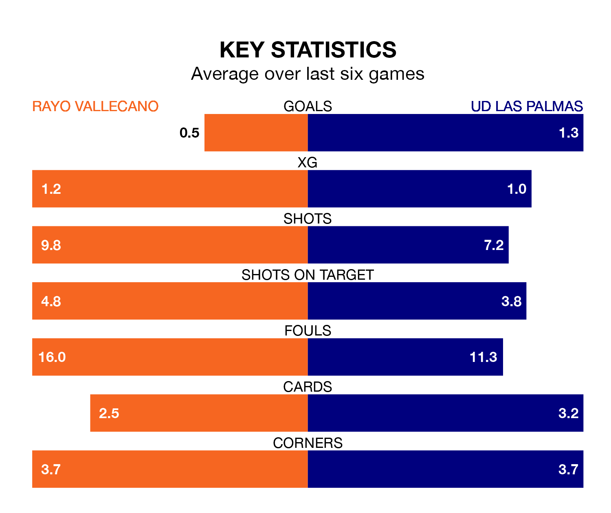

UD Las Palmas travel to Rayo Vallecano on Saturday lunchtime in La Liga.
The visitors come into the game on the back of a win in their last match, having beaten Villarreal 3-0 at home, with two goals from Kirian Rodríguez and one from Juan Herzog.
Rayo also won their last match, 2-0 against Getafe CF, with their goals scored by Sergio Camello.
With Stole Dimitrievski between the sticks, Rayo can rely on one of the league's safest pair of hands. He has kept eight clean sheets in his 19 appearances this season, and only one other 'keeper – Athletic Club Bilbao's Unai Simón – has been able to prevent the opposition scoring on more occasions in La Liga.
In Las Palmas's net, Álvaro Vallés has five clean sheets in 20 games.
In the last 10 years, Rayo and Las Palmas have played each other on seven occasions. Rayo won four of them and they drew three times.
On average, Rayo scored 1.4 goals and Las Palmas 0.6 in those matches.
Their last meeting was on October 22, when Rayo won 1-0 away.
The hosts are in disappointing form in La Liga, with one win and two draws from their last six games.
With three wins and a draw over that period, the away team's form is better – they have taken 10 points from 18, compared to Rayo's five.
With 18 goals in 19 games so far this season, Rayo are scoring at below the league average rate with 0.9 goals per game. And they are conceding at an average rate, letting in 24 goals at a rate of 1.3 per game.
Las Palmas are also below average scorers, with 0.9 goals per game, compared to a league average of 1.3. They have conceded 0.8 goals per game.
Las Palmas are ninth in the table after 20 games, of which they have won eight and drawn four, earning 28 points.
The home side are two places behind the visitors in 11th, with five wins and eight draws putting them on 23 points.
Saturday's match will be refereed by Mario Melero López, who has taken charge of seven La Liga games so far this season, issuing no red cards and booking 30 players. He has awarded one penalty.
The last Rayo game Melero López refereed was a 2-2 home draw with RCD Mallorca on September 30. His last Las Palmas match was their 2-1 win at home against Atlético Madrid on November 3.
Updated: 10:02 (UTC), 19/01/24